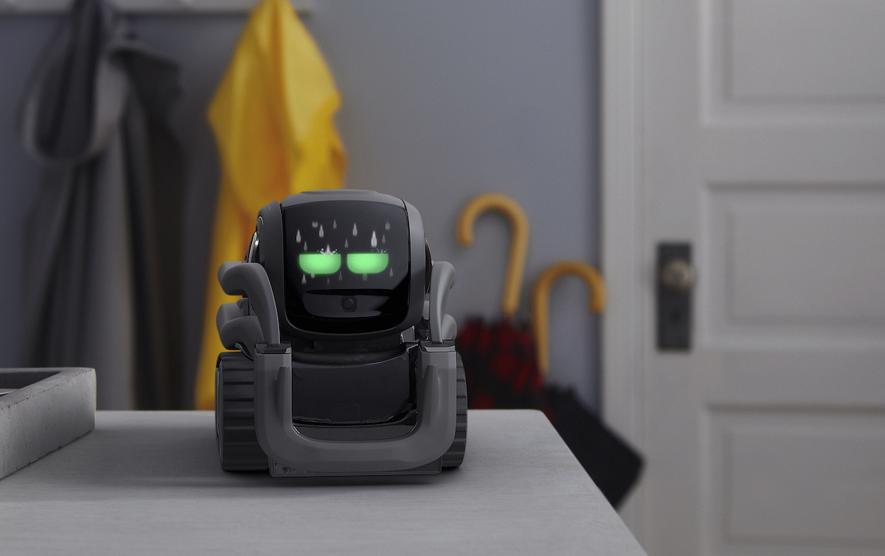

So I've finished my college exams for the summer and my Dad is driving me home from campus; I hadn't been keeping up with anything other than the major mainstream news stories so it came as a shock when he asks "did you hear that Anki have gone bust?".

This hit me harder than I would have guessed it might. Growing up with a selection of robotic wonders all of which played a part in inspiring me to get into tech, Anki were the grown up version, bursting with potential and excitement, and bookmarked as a place I would love to work, if the geek stars aligned.
I own both Cosmo and Vector, they both have hugely exciting API functionality, at a fraction of the cost of most decent programmable robots. Vector in particular has some great features including distance sensors, HD cameras and voice recognition technology, which recently even included Alexa integration. He came with some decent introductory programs including integration with OpenGL and external projects have linked Cosmo with Tensorflow for advanced object recognition. I'll be honest, it's a geeks dream.
So where did Anki go wrong? I speak purely from my experience of Cosmo and Vector. They were expensive, this is undeniable. Vector retailed at £250, and Cosmo was similar at launch. As a python programmer, they both had pretty unlimited potential, making them - in my mind - more than worth the price, as most decent compact commercially programmable robots have a far heftier price tag, and are aimed at colleges with big budgets. The build quality is certainly there, and the engineering feels smooth and sensible. Left to their own devices, they're as close as could come to a robot pet; but I suppose it speaks for itself that to me, all the value in them was contained not in what they could do, but in what I could do with them.
So what of Cosmo or Vector as a toy, after all, the programming capabilities were sold as an extra feature. Here is where they both definitely fall short. Cosmo is able to play mini-games which are gimmicky but sweet, although he had some irritating features such as needing to 'oil the gears' through an iPhone mini game before using him (which frustratingly included if you just wanted to turn him on to use the API). It also included a code lab similar to the much loved Scratch app for building block programming. The python programming features, while extensive, were not for the fainthearted, and certainly not child appropriate with synchronous calls and multiple libraries. Vector seemed at launch even more limited. When I purchased mine back in December, most of his features were not yet completed, and those which were weren't extensive, the voice recognition was poor when compared to the assistants readily available for a fraction of the price. Would I have felt 'conned' if I'd brought Vector full priced for the in-built functionalities alone? Only if I didn't appreciate the actual genius behind what seem like basic features - this is my inner geek refusing to say 'yes'.
Ultimately Vector seemed to flounder under the weight of its own brilliance. We are used to technology just being magic and amazing, and it can be easy to forget to pause and appreciate just how much goes into a face recognition or scene mapping program. So yes, while they are gimmicky features which provide a limited entertainment lifespan, they require talented (expensive) engineers and time.
Commercial robots have had varying levels of success. When I was younger, Lego Mindstorms were all the rage, and the latest version can still be found in the Lego store although it hasn't had a major upgrade since 2013. Robot toys have always seemed like a present for the geeky few, it doesn't come as a surprise the younger generation would rather have a toy which comes fully packaged than have to spend time patiently building or programming it themselves. This seems a shame, as there is nothing which matches the unspeakable joy of creating your own entertainment, and the unlimited potential which comes with it. Even Lego these days serves to build specific, packaged products, with no creativity or innovation needed. I miss the days of mumbo-jumbo Lego boxes where you could build anything, not just the latest Star Wars battleship.
I hope Anki continue to maintain Vector enough for users to enjoy him to the potential they invested in - I for one will continue to develop and create for him. Companies like Anki are the future of toy market, they just peaked too soon.